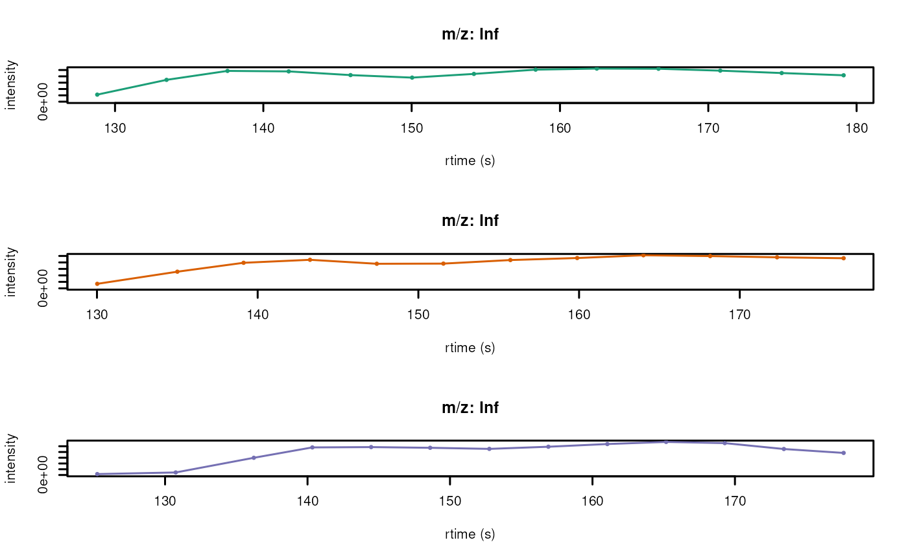
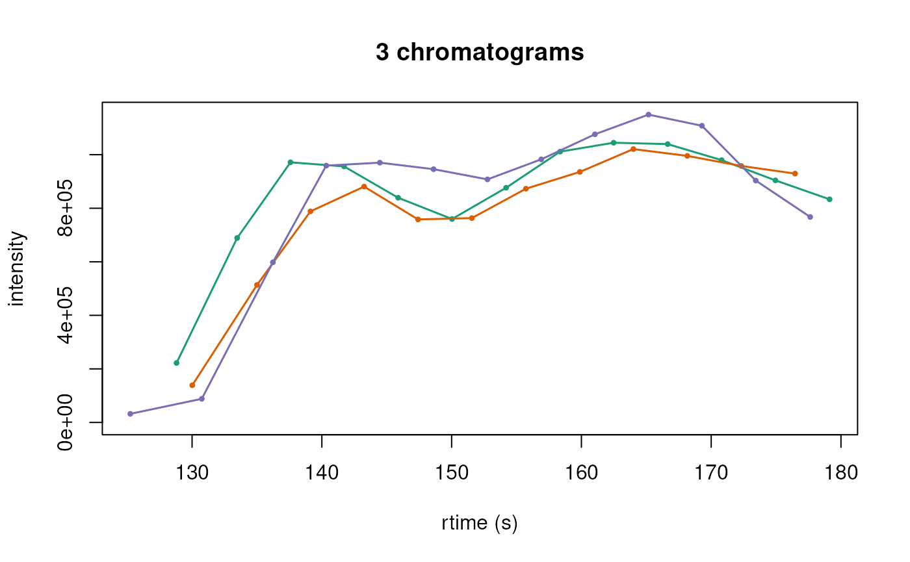

vignettes/using-a-chromatograms-object.Rmd
using-a-chromatograms-object.RmdPackage: Chromatograms
Authors: Laurent Gatto [aut] (ORCID: https://orcid.org/0000-0002-1520-2268), Johannes Rainer
[aut] (ORCID: https://orcid.org/0000-0002-6977-7147), Philippine
Louail [aut, cre] (ORCID: https://orcid.org/0009-0007-5429-6846)
Last modified: 2025-04-03 09:09:28.1782
Compiled: Thu Apr 3 09:37:12 2025
The Chromatograms package provides a scalable and flexible
infrastructure to represent, retrieve, and handle chromatographic data.
The Chromatograms object offers a standardized interface to
access and manipulate chromatographic data while supporting various ways
to store and retrieve this data through the concept of exchangeable
backends. This vignette provides general examples and
descriptions for the Chromatograms package.
Contributions to this vignette (content or correction of typos) or requests for additional details and information are highly welcome, ideally via pull requests or issues on the package’s github repository.
The package can be installed with the BiocManager package.
To install BiocManager, use
install.packages("BiocManager"), and after that, use
BiocManager::install("RformassSpectrometry/Chromatograms")
to install Chromatograms.
The Chromatograms object is a container for
chromatographic data, which includes peaks data (retention time
and related intensity values, also
referred to as peaks data variables in the context of
Chromatograms) and metadata of individual chromatograms
(so-called chromatogram variables). While a core set of
chromatogram variables (the coreChromatogramsVariables())
and peaks data variables (the corePeaksVariables()) are
guaranteed to be provided by a Chromatograms, it is
possible to add arbitrary variables to a Chromatograms
object.
The Chromatograms object is designed to contain
chromatographic data for a (large) set of chromatograms. The data is
organized linearly and can be thought of as a list of
chromatograms, where each element in the Chromatograms is
one chromatogram.
Backends allow to use different backends to store
chromatographic data while providing via the
Chromatograms class a unified interface to use that data.
The Chromatograms package defines a set of example backends
but any object extending the base ChromBackend class could
be used instead. The default backends are:
ChromBackendMemory: the default backend to
store data in memory. Due to its design the
ChromBackendMemory provides fast access to the peaks data
and metadata. Since all data is kept in memory, this backend has a
relatively large memory footprint (depending on the data) and is thus
not suggested for very large experiments.
ChromBackendMzR: this backend keeps only the
chromatographic metadata variables in memory and relies on the mzR package
to read chromatographic peaks (retention time and intensity values) from
the original mzML files on-demand.
ChromBackendSpectra: this backend is used to
generate chromatographic data from a Spectra object. I can
be use to vcreate TIC, BPC or EICs.
The peaks data variables information in the
Chromatograms object can be accessed using the
peaksData() function. peaksData can be
accessed, replaced, and also filtered/subsetted.
The core peaks data variables all have their own accessors and are as follows:
rtime: A numeric vector containing
retention time values.intensity: A numeric vector containing
intensity values.The metadata of individual chromatograms (so called chromatograms
variables), can be accessed using the chromData()
function. The chromData can be accessed, replaced, and
filtered.
The core chromatogram variables all have their own accessor
methods, and it is guaranteed that a value is returned by them (or
NA if the information is not available).
The core variables and their data types are (alphabetically ordered):
chromIndex: an integer with the index of
the chromatogram in the original source file (e.g., mzML
file).collisionEnergy: for SRM data, numeric
with the collision energy of the precursor.dataOrigin: optional character with the
origin of a chromatogram.storageLocation: character defining where
the data is (currently) stored.msLevel: integer defining the MS level of
the data.mz: optional numeric with the (target) m/z
value for the chromatographic data.mzMin: optional numeric with the lower m/z
value of the m/z range in case the data (e.g., an extracted ion
chromatogram EIC) was extracted from a Chromtagorams
object.mzMax: optional numeric with the upper m/z
value of the m/z range.precursorMz: for SRM data, numeric with
the target m/z of the precursor (parent).precursorMzMin: for SRM data, optional
numeric with the lower m/z of the precursor’s isolation
window.precursorMzMax: for SRM data, optional
numeric with the upper m/z of the precursor’s isolation
window.productMz: for SRM data, numeric with the
target m/z of the product ion.productMzMin: for SRM data, optional
numeric with the lower m/z of the product’s isolation
window.productMzMax: for SRM data, optional
numeric with the upper m/z of the product’s isolation
window.For details on the individual variables and their getter/setter
functions, see the help for Chromatograms
(?Chromatograms). Also, note that these variables are
suggested but not required to characterize a chromatogram.
Chromatograms objects
The simplest way to create a Chromatograms object is by
defining a backend of choice, which mainly depends on what type of data
you have, and passing that to the Chromatograms constructor
function. Below we create such an object for a set of 2 chromatograms,
providing their metadata through a data.frame with the MS level, m/z,
and chromatogram index columns, and peaks data. The metadata includes
the MS level, m/z, and chromatogram index, while the peaks data includes
the retention time and intensity in a list of data.frames.
# A data.frame with chromatogram variables.
cdata <- data.frame(msLevel = c(1L, 1L),
mz = c(112.2, 123.3),
chromIndex = c(1L, 2L))
# Retention time and intensity values for each chromatogram.
pdata <- list(
data.frame(rtime = c(11, 12.4, 12.8, 13.2, 14.6, 15.1, 16.5),
intensity = c(50.5, 123.3, 153.6, 2354.3, 243.4, 123.4, 83.2)),
data.frame(rtime = c(45.1, 46.2, 53, 54.2, 55.3, 56.4, 57.5),
intensity = c(100, 180.1, 300.45, 1400, 1200.3, 300.2, 150.1))
)
# Create and initialize the backend
be <- backendInitialize(ChromBackendMemory(),
chromData = cdata, peaksData = pdata)
# Create Chromatograms object
chr <- Chromatograms(be)
chr## Chromatographic data (Chromatograms) with 2 chromatograms in a ChromBackendMemory backend:
## chromIndex msLevel mz
## 1 1 1 112.2
## 2 2 1 123.3
## ... 0 more chromatogram variables/columns
## ... 2 peaksData variablesAlternatively, it is possible to import chromatograhic data from mass
spectrometry raw files in mzML/mzXML or CDF format. Below, we create a
Chromatograms object from an mzML file and define to use a
ChromBackendMzR backend to store the data (note
that this requires the mzR package
to be installed). This backend, specifically designed for raw LC-MS
data, keeps only a subset of chromatogram variables in memory while
reading the retention time and intensity values from the original data
files only on demand. See section Backends for
more details on backends and their properties.
MRM_file <- system.file("proteomics", "MRM-standmix-5.mzML.gz",
package = "msdata")
be <- backendInitialize(ChromBackendMzR(), files = MRM_file,
BPPARAM = SerialParam())
chr_mzr <- Chromatograms(be)The Chromatograms object chr_mzr now
contains the chromatograms from the mzML file MRM_file. The
chromatograms can be accessed and manipulated using the
Chromatograms object’s methods and functions.
Basic information about the Chromatograms object can be
accessed using functions such as length(), which tell us
how many chromatograms are contained in the object:
length(chr)## [1] 2
length(chr_mzr)## [1] 138The Chromatograms object provides a set of methods to
access and manipulate the chromatographic data. The following sections
describe how to do such things on the peaks data and related
metadata.
The main function to access the full or a part of the peaks data is
peaksData() (imaginative right), This function returns a
list of data.frames, where each data.frame contains the retention time
and intensity values for one chromatogram. It is used such as below:
peaksData(chr)## [[1]]
## rtime intensity
## 1 11.0 50.5
## 2 12.4 123.3
## 3 12.8 153.6
## 4 13.2 2354.3
## 5 14.6 243.4
## 6 15.1 123.4
## 7 16.5 83.2
##
## [[2]]
## rtime intensity
## 1 45.1 100.00
## 2 46.2 180.10
## 3 53.0 300.45
## 4 54.2 1400.00
## 5 55.3 1200.30
## 6 56.4 300.20
## 7 57.5 150.10Specific peaks variables can be accessed by either precising the
"columns" parameter in peaksData() or using
$.
## [[1]]
## [1] 11.0 12.4 12.8 13.2 14.6 15.1 16.5
##
## [[2]]
## [1] 45.1 46.2 53.0 54.2 55.3 56.4 57.5
chr$rtime## [[1]]
## [1] 11.0 12.4 12.8 13.2 14.6 15.1 16.5
##
## [[2]]
## [1] 45.1 46.2 53.0 54.2 55.3 56.4 57.5
chr@backend$rtime## [[1]]
## [1] 11.0 12.4 12.8 13.2 14.6 15.1 16.5
##
## [[2]]
## [1] 45.1 46.2 53.0 54.2 55.3 56.4 57.5The methods above also allows to replace the peaks data. It can either be the full peaks data:
peaksData(chr) <- list(data.frame(rtime = c(1, 2, 3, 4, 5, 6, 7),
intensity = c(1, 2, 3, 4, 5, 6, 7)),
data.frame(rtime = c(1, 2, 3, 4, 5, 6, 7),
intensity = c(1, 2, 3, 4, 5, 6, 7)))Or for specific variables:
The peak data can be therefore accessed, replaced but also
filtered/subsetted. The filtering can be done using the
filterPeaksData() function. This function filters numerical
peaks data variables based on the specified numerical ranges parameter.
This function does not reduce the number of chromatograms in the object,
but it removes the specified peaks data (e.g., “rtime” and “intensity”
pairs) from the peaksData.
chr_filt <- filterPeaksData(chr, variables = "rtime", ranges = c(12, 15))
length(chr_filt)## [1] 2## [1] 2As you can see the number of chromatograms in the
Chromatograms object is not reduced, but the peaks data is
filtered/reduced.
The main function to access the full chromatographic metadata is
chromData(). This function returns the metadata of the
chromatograms stored in the Chromatograms object. It can be
used as follows:
chromData(chr)## msLevel mz chromIndex collisionEnergy dataOrigin mzMin mzMax precursorMz
## 1 1 112.2 1 NA <NA> NA NA NA
## 2 1 123.3 2 NA <NA> NA NA NA
## precursorMzMin precursorMzMax productMz productMzMin productMzMax
## 1 NA NA NA NA NA
## 2 NA NA NA NA NASpecific chromatogram variables can be accessed by either precising
the "columns" parameter in chromData() or
using $.
## msLevel
## 1 1
## 2 1
chr$chromIndex## [1] 1 2The metadata can be replaced using the same methods as for the peaks data.
## msLevel mz chromIndex collisionEnergy dataOrigin mzMin mzMax precursorMz
## 1 2 112.2 1 NA <NA> NA NA NA
## 2 2 123.3 2 NA <NA> NA NA NA
## precursorMzMin precursorMzMax productMz productMzMin productMzMax
## 1 NA NA NA NA NA
## 2 NA NA NA NA NAextra columns can also be added by the user using the $
operator.
## msLevel mz chromIndex collisionEnergy dataOrigin mzMin mzMax precursorMz
## 1 2 112.2 1 NA <NA> NA NA NA
## 2 2 123.3 2 NA <NA> NA NA NA
## precursorMzMin precursorMzMax productMz productMzMin productMzMax extra
## 1 NA NA NA NA NA extra1
## 2 NA NA NA NA NA extra2As for the peaks data, the filtering can be done using the
filterChromData() function. This function filters the
chromatogram variables based on the specified ranges parameter. However,
contrarily to the peaks data, the filtering does reduces the
number of chromatograms in the object.
chr_filt <- filterChromData(chr, variables = "chromIndex", ranges = c(1,2),
keep = TRUE)
length(chr_filt)## [1] 2
length(chr)## [1] 2The number of chromatograms in the Chromatograms object
is reduced.
The Chromatograms object is designed to be scalable and
flexible. It is therefore possible to perform processing in a lazy
manner, i.e., only when the data is needed, and in a parallelized
way.
Some functions, such as those that require reading large amounts of
data from source files, are deferred and executed only when the data is
needed. For example, when filterPeaksData() is applied, it
initially returns the same Chromatograms object as the
input, but the filtering step is stored in the processing queue of the
object. Later, when peaksData is accessed, all stacked
operations are performed, and the updated data is returned.
This approach is particularly important for backends that do not
store data in memory, such as ChromBackendMzR. It ensures
that data is read from the source file only when required, reducing
memory usage. However, loading and processing data in smaller chunks can
further minimize memory demands, allowing efficient handling of large
datasets.
It is possible to add also custom functions to the processing queue
of the object. Such a function can be applicable to both the peaks data
and the chromatogram metadata. Below we demonstrate how to add a custom
function to the processing queue of a Chromatograms object.
Below we define a function that divides the intensities of each peak by
a value which can be passed with argument y.
## Define a function that takes the backend as an input, divides the intensity
## by parameter y and returns it. Note that ... is required in
## the function's definition.
divide_intensities <- function(x, y, ...) {
intensity(x) <- lapply(intensity(x), `/`, y)
x
}
## Add the function to the procesing queue
chr_2 <- addProcessing(chr, divide_intensities, y = 2)
chr_2## Chromatographic data (Chromatograms) with 2 chromatograms in a ChromBackendMemory backend:
## chromIndex msLevel mz
## 1 1 2 112.2
## 2 2 2 123.3
## ... 11 more chromatogram variables/columns
## ... 2 peaksData variables
## Lazy evaluation queue: 1 processing step(s)Object chr_2 has now 2 processing steps in its lazy
evaluation queue. Calling intensity() on this object will
now return intensities that are half of the intensities of the original
objects chr.
intensity(chr_2) ## [[1]]
## [1] 0.5 1.0 1.5 2.0 2.5 3.0 3.5
##
## [[2]]
## [1] 0.5 1.0 1.5 2.0 2.5 3.0 3.5
intensity(chr)## [[1]]
## [1] 1 2 3 4 5 6 7
##
## [[2]]
## [1] 1 2 3 4 5 6 7Finally, for Chromatograms that use a writeable
backend, such as the ChromBackendMemory it is possible to
apply the processing queue to the peak data and write that back to the
data storage with the applyProcessing() function. Below we
use this to make all data manipulations on peak data of the
sps_rep object persistent.
length(chr_2@processingQueue)## [1] 1
chr_2 <- applyProcessing(chr_2)
length(chr_2@processingQueue)## [1] 0
chr_2## Chromatographic data (Chromatograms) with 2 chromatograms in a ChromBackendMemory backend:
## chromIndex msLevel mz
## 1 1 2 112.2
## 2 2 2 123.3
## ... 11 more chromatogram variables/columns
## ... 2 peaksData variables
## Processing:
## Applied processing queue with 1 steps [Thu Apr 3 09:37:16 2025]Before applyProcessing() the lazy evaluation queue
contained 2 processing steps, which were then applied to the peak data
and written to the data storage. Note that calling
reset() after
applyProcessing() can no longer restore the
data.
The functions are designed to run in multiple chunks (i.e., pieces)
of the object simultaneously, enabling parallelization. This is achieved
using the BiocParallel package. For
ChromBackendMzR, data is automatically split and processed
by files.
For other backends, chunk-wise processing can be enabled by setting
the processingChunkSize of a Chromatograms
object, which defines the number of chromatograms for which peak data
should be loaded and processed in each iteration. The
processingChunkFactor() function can be used to evaluate
how the data will be split. Below, we use this function to assess how
chunk-wise processing would be performed with two
Chromatograms objects:
## factor()
## Levels:For the Chromatograms with the in-memory backend an
empty factor() is returned, thus, no chunk-wise processing
will be performed. We next evaluate whether the
Chromatograms with the ChromBackendMzR on-disk
backend would use chunk-wise processing.
processingChunkFactor(chr_mzr)## [1] /__w/_temp/Library/msdata/proteomics/MRM-standmix-5.mzML.gz
## [2] /__w/_temp/Library/msdata/proteomics/MRM-standmix-5.mzML.gz
## [3] /__w/_temp/Library/msdata/proteomics/MRM-standmix-5.mzML.gz
## [4] /__w/_temp/Library/msdata/proteomics/MRM-standmix-5.mzML.gz
## [5] /__w/_temp/Library/msdata/proteomics/MRM-standmix-5.mzML.gz
## [6] /__w/_temp/Library/msdata/proteomics/MRM-standmix-5.mzML.gz
## [7] /__w/_temp/Library/msdata/proteomics/MRM-standmix-5.mzML.gz
## [8] /__w/_temp/Library/msdata/proteomics/MRM-standmix-5.mzML.gz
## [9] /__w/_temp/Library/msdata/proteomics/MRM-standmix-5.mzML.gz
## [10] /__w/_temp/Library/msdata/proteomics/MRM-standmix-5.mzML.gz
## [11] /__w/_temp/Library/msdata/proteomics/MRM-standmix-5.mzML.gz
## [12] /__w/_temp/Library/msdata/proteomics/MRM-standmix-5.mzML.gz
## [13] /__w/_temp/Library/msdata/proteomics/MRM-standmix-5.mzML.gz
## [14] /__w/_temp/Library/msdata/proteomics/MRM-standmix-5.mzML.gz
## [15] /__w/_temp/Library/msdata/proteomics/MRM-standmix-5.mzML.gz
## [16] /__w/_temp/Library/msdata/proteomics/MRM-standmix-5.mzML.gz
## [17] /__w/_temp/Library/msdata/proteomics/MRM-standmix-5.mzML.gz
## [18] /__w/_temp/Library/msdata/proteomics/MRM-standmix-5.mzML.gz
## [19] /__w/_temp/Library/msdata/proteomics/MRM-standmix-5.mzML.gz
## [20] /__w/_temp/Library/msdata/proteomics/MRM-standmix-5.mzML.gz
## [21] /__w/_temp/Library/msdata/proteomics/MRM-standmix-5.mzML.gz
## [22] /__w/_temp/Library/msdata/proteomics/MRM-standmix-5.mzML.gz
## [23] /__w/_temp/Library/msdata/proteomics/MRM-standmix-5.mzML.gz
## [24] /__w/_temp/Library/msdata/proteomics/MRM-standmix-5.mzML.gz
## [25] /__w/_temp/Library/msdata/proteomics/MRM-standmix-5.mzML.gz
## [26] /__w/_temp/Library/msdata/proteomics/MRM-standmix-5.mzML.gz
## [27] /__w/_temp/Library/msdata/proteomics/MRM-standmix-5.mzML.gz
## [28] /__w/_temp/Library/msdata/proteomics/MRM-standmix-5.mzML.gz
## [29] /__w/_temp/Library/msdata/proteomics/MRM-standmix-5.mzML.gz
## [30] /__w/_temp/Library/msdata/proteomics/MRM-standmix-5.mzML.gz
## [31] /__w/_temp/Library/msdata/proteomics/MRM-standmix-5.mzML.gz
## [32] /__w/_temp/Library/msdata/proteomics/MRM-standmix-5.mzML.gz
## [33] /__w/_temp/Library/msdata/proteomics/MRM-standmix-5.mzML.gz
## [34] /__w/_temp/Library/msdata/proteomics/MRM-standmix-5.mzML.gz
## [35] /__w/_temp/Library/msdata/proteomics/MRM-standmix-5.mzML.gz
## [36] /__w/_temp/Library/msdata/proteomics/MRM-standmix-5.mzML.gz
## [37] /__w/_temp/Library/msdata/proteomics/MRM-standmix-5.mzML.gz
## [38] /__w/_temp/Library/msdata/proteomics/MRM-standmix-5.mzML.gz
## [39] /__w/_temp/Library/msdata/proteomics/MRM-standmix-5.mzML.gz
## [40] /__w/_temp/Library/msdata/proteomics/MRM-standmix-5.mzML.gz
## [41] /__w/_temp/Library/msdata/proteomics/MRM-standmix-5.mzML.gz
## [42] /__w/_temp/Library/msdata/proteomics/MRM-standmix-5.mzML.gz
## [43] /__w/_temp/Library/msdata/proteomics/MRM-standmix-5.mzML.gz
## [44] /__w/_temp/Library/msdata/proteomics/MRM-standmix-5.mzML.gz
## [45] /__w/_temp/Library/msdata/proteomics/MRM-standmix-5.mzML.gz
## [46] /__w/_temp/Library/msdata/proteomics/MRM-standmix-5.mzML.gz
## [47] /__w/_temp/Library/msdata/proteomics/MRM-standmix-5.mzML.gz
## [48] /__w/_temp/Library/msdata/proteomics/MRM-standmix-5.mzML.gz
## [49] /__w/_temp/Library/msdata/proteomics/MRM-standmix-5.mzML.gz
## [50] /__w/_temp/Library/msdata/proteomics/MRM-standmix-5.mzML.gz
## [51] /__w/_temp/Library/msdata/proteomics/MRM-standmix-5.mzML.gz
## [52] /__w/_temp/Library/msdata/proteomics/MRM-standmix-5.mzML.gz
## [53] /__w/_temp/Library/msdata/proteomics/MRM-standmix-5.mzML.gz
## [54] /__w/_temp/Library/msdata/proteomics/MRM-standmix-5.mzML.gz
## [55] /__w/_temp/Library/msdata/proteomics/MRM-standmix-5.mzML.gz
## [56] /__w/_temp/Library/msdata/proteomics/MRM-standmix-5.mzML.gz
## [57] /__w/_temp/Library/msdata/proteomics/MRM-standmix-5.mzML.gz
## [58] /__w/_temp/Library/msdata/proteomics/MRM-standmix-5.mzML.gz
## [59] /__w/_temp/Library/msdata/proteomics/MRM-standmix-5.mzML.gz
## [60] /__w/_temp/Library/msdata/proteomics/MRM-standmix-5.mzML.gz
## [61] /__w/_temp/Library/msdata/proteomics/MRM-standmix-5.mzML.gz
## [62] /__w/_temp/Library/msdata/proteomics/MRM-standmix-5.mzML.gz
## [63] /__w/_temp/Library/msdata/proteomics/MRM-standmix-5.mzML.gz
## [64] /__w/_temp/Library/msdata/proteomics/MRM-standmix-5.mzML.gz
## [65] /__w/_temp/Library/msdata/proteomics/MRM-standmix-5.mzML.gz
## [66] /__w/_temp/Library/msdata/proteomics/MRM-standmix-5.mzML.gz
## [67] /__w/_temp/Library/msdata/proteomics/MRM-standmix-5.mzML.gz
## [68] /__w/_temp/Library/msdata/proteomics/MRM-standmix-5.mzML.gz
## [69] /__w/_temp/Library/msdata/proteomics/MRM-standmix-5.mzML.gz
## [70] /__w/_temp/Library/msdata/proteomics/MRM-standmix-5.mzML.gz
## [71] /__w/_temp/Library/msdata/proteomics/MRM-standmix-5.mzML.gz
## [72] /__w/_temp/Library/msdata/proteomics/MRM-standmix-5.mzML.gz
## [73] /__w/_temp/Library/msdata/proteomics/MRM-standmix-5.mzML.gz
## [74] /__w/_temp/Library/msdata/proteomics/MRM-standmix-5.mzML.gz
## [75] /__w/_temp/Library/msdata/proteomics/MRM-standmix-5.mzML.gz
## [76] /__w/_temp/Library/msdata/proteomics/MRM-standmix-5.mzML.gz
## [77] /__w/_temp/Library/msdata/proteomics/MRM-standmix-5.mzML.gz
## [78] /__w/_temp/Library/msdata/proteomics/MRM-standmix-5.mzML.gz
## [79] /__w/_temp/Library/msdata/proteomics/MRM-standmix-5.mzML.gz
## [80] /__w/_temp/Library/msdata/proteomics/MRM-standmix-5.mzML.gz
## [81] /__w/_temp/Library/msdata/proteomics/MRM-standmix-5.mzML.gz
## [82] /__w/_temp/Library/msdata/proteomics/MRM-standmix-5.mzML.gz
## [83] /__w/_temp/Library/msdata/proteomics/MRM-standmix-5.mzML.gz
## [84] /__w/_temp/Library/msdata/proteomics/MRM-standmix-5.mzML.gz
## [85] /__w/_temp/Library/msdata/proteomics/MRM-standmix-5.mzML.gz
## [86] /__w/_temp/Library/msdata/proteomics/MRM-standmix-5.mzML.gz
## [87] /__w/_temp/Library/msdata/proteomics/MRM-standmix-5.mzML.gz
## [88] /__w/_temp/Library/msdata/proteomics/MRM-standmix-5.mzML.gz
## [89] /__w/_temp/Library/msdata/proteomics/MRM-standmix-5.mzML.gz
## [90] /__w/_temp/Library/msdata/proteomics/MRM-standmix-5.mzML.gz
## [91] /__w/_temp/Library/msdata/proteomics/MRM-standmix-5.mzML.gz
## [92] /__w/_temp/Library/msdata/proteomics/MRM-standmix-5.mzML.gz
## [93] /__w/_temp/Library/msdata/proteomics/MRM-standmix-5.mzML.gz
## [94] /__w/_temp/Library/msdata/proteomics/MRM-standmix-5.mzML.gz
## [95] /__w/_temp/Library/msdata/proteomics/MRM-standmix-5.mzML.gz
## [96] /__w/_temp/Library/msdata/proteomics/MRM-standmix-5.mzML.gz
## [97] /__w/_temp/Library/msdata/proteomics/MRM-standmix-5.mzML.gz
## [98] /__w/_temp/Library/msdata/proteomics/MRM-standmix-5.mzML.gz
## [99] /__w/_temp/Library/msdata/proteomics/MRM-standmix-5.mzML.gz
## [100] /__w/_temp/Library/msdata/proteomics/MRM-standmix-5.mzML.gz
## [101] /__w/_temp/Library/msdata/proteomics/MRM-standmix-5.mzML.gz
## [102] /__w/_temp/Library/msdata/proteomics/MRM-standmix-5.mzML.gz
## [103] /__w/_temp/Library/msdata/proteomics/MRM-standmix-5.mzML.gz
## [104] /__w/_temp/Library/msdata/proteomics/MRM-standmix-5.mzML.gz
## [105] /__w/_temp/Library/msdata/proteomics/MRM-standmix-5.mzML.gz
## [106] /__w/_temp/Library/msdata/proteomics/MRM-standmix-5.mzML.gz
## [107] /__w/_temp/Library/msdata/proteomics/MRM-standmix-5.mzML.gz
## [108] /__w/_temp/Library/msdata/proteomics/MRM-standmix-5.mzML.gz
## [109] /__w/_temp/Library/msdata/proteomics/MRM-standmix-5.mzML.gz
## [110] /__w/_temp/Library/msdata/proteomics/MRM-standmix-5.mzML.gz
## [111] /__w/_temp/Library/msdata/proteomics/MRM-standmix-5.mzML.gz
## [112] /__w/_temp/Library/msdata/proteomics/MRM-standmix-5.mzML.gz
## [113] /__w/_temp/Library/msdata/proteomics/MRM-standmix-5.mzML.gz
## [114] /__w/_temp/Library/msdata/proteomics/MRM-standmix-5.mzML.gz
## [115] /__w/_temp/Library/msdata/proteomics/MRM-standmix-5.mzML.gz
## [116] /__w/_temp/Library/msdata/proteomics/MRM-standmix-5.mzML.gz
## [117] /__w/_temp/Library/msdata/proteomics/MRM-standmix-5.mzML.gz
## [118] /__w/_temp/Library/msdata/proteomics/MRM-standmix-5.mzML.gz
## [119] /__w/_temp/Library/msdata/proteomics/MRM-standmix-5.mzML.gz
## [120] /__w/_temp/Library/msdata/proteomics/MRM-standmix-5.mzML.gz
## [121] /__w/_temp/Library/msdata/proteomics/MRM-standmix-5.mzML.gz
## [122] /__w/_temp/Library/msdata/proteomics/MRM-standmix-5.mzML.gz
## [123] /__w/_temp/Library/msdata/proteomics/MRM-standmix-5.mzML.gz
## [124] /__w/_temp/Library/msdata/proteomics/MRM-standmix-5.mzML.gz
## [125] /__w/_temp/Library/msdata/proteomics/MRM-standmix-5.mzML.gz
## [126] /__w/_temp/Library/msdata/proteomics/MRM-standmix-5.mzML.gz
## [127] /__w/_temp/Library/msdata/proteomics/MRM-standmix-5.mzML.gz
## [128] /__w/_temp/Library/msdata/proteomics/MRM-standmix-5.mzML.gz
## [129] /__w/_temp/Library/msdata/proteomics/MRM-standmix-5.mzML.gz
## [130] /__w/_temp/Library/msdata/proteomics/MRM-standmix-5.mzML.gz
## [131] /__w/_temp/Library/msdata/proteomics/MRM-standmix-5.mzML.gz
## [132] /__w/_temp/Library/msdata/proteomics/MRM-standmix-5.mzML.gz
## [133] /__w/_temp/Library/msdata/proteomics/MRM-standmix-5.mzML.gz
## [134] /__w/_temp/Library/msdata/proteomics/MRM-standmix-5.mzML.gz
## [135] /__w/_temp/Library/msdata/proteomics/MRM-standmix-5.mzML.gz
## [136] /__w/_temp/Library/msdata/proteomics/MRM-standmix-5.mzML.gz
## [137] /__w/_temp/Library/msdata/proteomics/MRM-standmix-5.mzML.gz
## [138] /__w/_temp/Library/msdata/proteomics/MRM-standmix-5.mzML.gz
## Levels: /__w/_temp/Library/msdata/proteomics/MRM-standmix-5.mzML.gzHere the factor would on yl be of length 1, meaning that all
chromatograms will be processed in one go. however the length would be
higher if more than one file is used. As this data is quite big (138
chromatograms), we can set the processingChunkSize to 10 to
process the data in chunks of 10 chromatograms.
processingChunkSize(chr_mzr) <- 10
processingChunkFactor(chr_mzr) |> table()##
## 1 2 3 4 5 6 7 8 9 10 11 12 13 14
## 10 10 10 10 10 10 10 10 10 10 10 10 10 8The Chromatograms with the ChromBackendMzR
backend would now split the data in about equally sized arbitrary chunks
and no longer by original data file. processingChunkSize
thus overrides any splitting suggested by the backend.
While chunk-wise processing reduces the memory demand of operations,
the splitting and merging of the data and results can negatively impact
performance. Thus, small data sets or Chromatograms with
in-memory backends willgenerally not benefit from this type of
processing. For computationally intense operation on the other hand,
chunk-wise processing has the advantage, that chunks can (and will) be
processed in parallel (depending on the parallel processing setup).
In the previous sections we learned already that a
Chromatograms object can use different backends for the
actual data handling. It is also possible to change the backend of a
Chromatograms to a different one with the
setBackend() function. As of now it is only possible to
change the ChrombackendMzR to an in-memory backend such as
ChromBackendMemory.
print(object.size(chr_mzr), units = "Mb")## 0.1 Mb
chr_mzr <- setBackend(chr_mzr, ChromBackendMemory(), BPPARAM = SerialParam())
chr_mzr## Chromatographic data (Chromatograms) with 138 chromatograms in a ChromBackendMemory backend:
## chromIndex msLevel mz
## 1 1 NA NA
## 2 2 NA NA
## 3 3 NA NA
## 4 4 NA NA
## 5 5 NA NA
## 6 6 NA NA
## ... 6 more chromatogram variables/columns
## ... 2 peaksData variables
## Processing:
## Switch backend from ChromBackendMzR to ChromBackendMemory [Thu Apr 3 09:37:17 2025]
chr_mzr@backend@peaksData[[1]] |> head() # data is now in memory## rtime intensity
## 1 1.666667e-05 45.37833
## 2 4.233333e-03 44.39301
## 3 8.450000e-03 45.33704
## 4 1.266667e-02 44.30909
## 5 1.686667e-02 45.40231
## 6 2.108333e-02 44.29813With the call the full peak data was imported from the original mzML files into the object. This has obviously an impact on the object’s size, which is now much larger than before.
print(object.size(chr_mzr), units = "Mb")## 2.8 MbFor this purpose let’s create a Chromatogram object from public spectral data.
## Loading required package: Spectra## Loading required package: S4Vectors## Loading required package: stats4## Loading required package: BiocGenerics## Loading required package: generics##
## Attaching package: 'generics'## The following objects are masked from 'package:base':
##
## as.difftime, as.factor, as.ordered, intersect, is.element, setdiff,
## setequal, union##
## Attaching package: 'BiocGenerics'## The following objects are masked from 'package:stats':
##
## IQR, mad, sd, var, xtabs## The following objects are masked from 'package:base':
##
## anyDuplicated, aperm, append, as.data.frame, basename, cbind,
## colnames, dirname, do.call, duplicated, eval, evalq, Filter, Find,
## get, grep, grepl, is.unsorted, lapply, Map, mapply, match, mget,
## order, paste, pmax, pmax.int, pmin, pmin.int, Position, rank,
## rbind, Reduce, rownames, sapply, saveRDS, table, tapply, unique,
## unsplit, which.max, which.min##
## Attaching package: 'S4Vectors'## The following object is masked from 'package:utils':
##
## findMatches## The following objects are masked from 'package:base':
##
## expand.grid, I, unname##
## Attaching package: 'Spectra'## The following object is masked from 'package:Chromatograms':
##
## reset
be <- backendInitialize(MsBackendMetaboLights(), mtblsId = "MTBLS39",
filePattern = c("63B.cdf"))## Used data files from the assay's column "Raw Spectral Data File" since none were available in column "Derived Spectral Data File".
chr_s <- Chromatograms(Spectra(be))We now have a Chromatograms object chr_s
with a ChromBackendSpectra backend. one chromatogram was
generated per file.
chr_s## Chromatographic data (Chromatograms) with 3 chromatograms in a ChromBackendSpectra backend:
## chromIndex msLevel mz
## 1 1 1 Inf
## 2 2 1 Inf
## 3 3 1 Inf
## ... 7 more chromatogram variables/columns
## ... 2 peaksData variables
##
## The Spectra object contains 1651 spectraNow, let’s say we want to plot specific area of the chromatograms.
chromData(chr_s)$rtmin <- 125## Please keep in mind the 'ChromBackendSpectra' backend is read-only. The chromData slot will be modified but the changes will not affect the Spectra object. You will need to run `factorize()` to update the 'chromSpectraIndex' column.
chromData(chr_s)$rtmax <- 180## Please keep in mind the 'ChromBackendSpectra' backend is read-only. The chromData slot will be modified but the changes will not affect the Spectra object. You will need to run `factorize()` to update the 'chromSpectraIndex' column.
chromData(chr_s)$mzmin <- 100## Please keep in mind the 'ChromBackendSpectra' backend is read-only. The chromData slot will be modified but the changes will not affect the Spectra object. You will need to run `factorize()` to update the 'chromSpectraIndex' column.
chromData(chr_s)$mzmax <- 100.5## Please keep in mind the 'ChromBackendSpectra' backend is read-only. The chromData slot will be modified but the changes will not affect the Spectra object. You will need to run `factorize()` to update the 'chromSpectraIndex' column.The Chromatograms object provides a set of functions to
plot the chromatograms and their peaks data. The
plotChromatograms() function can be used to plot each
single chromatograms into its own plot.
plotChromatograms(chr_s, col = c("green", "red", "blue"))
On the overhand if the users wants to easily compare the
chromatograms, the plotChromatogramsOverlay() function can
be used to overlay all chromatograms into one plot.
plotChromatogramsOverlay(chr_s, col = c("green", "red", "blue"))
## R Under development (unstable) (2025-03-08 r87910)
## Platform: x86_64-pc-linux-gnu
## Running under: Ubuntu 24.04.1 LTS
##
## Matrix products: default
## BLAS: /usr/lib/x86_64-linux-gnu/openblas-pthread/libblas.so.3
## LAPACK: /usr/lib/x86_64-linux-gnu/openblas-pthread/libopenblasp-r0.3.26.so; LAPACK version 3.12.0
##
## locale:
## [1] LC_CTYPE=en_US.UTF-8 LC_NUMERIC=C
## [3] LC_TIME=en_US.UTF-8 LC_COLLATE=en_US.UTF-8
## [5] LC_MONETARY=en_US.UTF-8 LC_MESSAGES=en_US.UTF-8
## [7] LC_PAPER=en_US.UTF-8 LC_NAME=C
## [9] LC_ADDRESS=C LC_TELEPHONE=C
## [11] LC_MEASUREMENT=en_US.UTF-8 LC_IDENTIFICATION=C
##
## time zone: UTC
## tzcode source: system (glibc)
##
## attached base packages:
## [1] stats4 stats graphics grDevices utils datasets methods
## [8] base
##
## other attached packages:
## [1] MsBackendMetaboLights_1.1.4 Spectra_1.17.9
## [3] S4Vectors_0.45.4 BiocGenerics_0.53.6
## [5] generics_0.1.3 Chromatograms_0.6.0
## [7] ProtGenerics_1.39.2 BiocParallel_1.41.5
## [9] BiocStyle_2.35.0
##
## loaded via a namespace (and not attached):
## [1] xfun_0.52 bslib_0.9.0 htmlwidgets_1.6.4
## [4] Biobase_2.67.0 vctrs_0.6.5 tools_4.5.0
## [7] curl_6.2.2 parallel_4.5.0 tibble_3.2.1
## [10] RSQLite_2.3.9 cluster_2.1.8.1 blob_1.2.4
## [13] pkgconfig_2.0.3 dbplyr_2.5.0 desc_1.4.3
## [16] lifecycle_1.0.4 compiler_4.5.0 textshaping_1.0.0
## [19] progress_1.2.3 codetools_0.2-20 ncdf4_1.24
## [22] clue_0.3-66 htmltools_0.5.8.1 sass_0.4.9
## [25] yaml_2.3.10 crayon_1.5.3 pkgdown_2.1.1.9000
## [28] pillar_1.10.1 jquerylib_0.1.4 MASS_7.3-65
## [31] cachem_1.1.0 MetaboCoreUtils_1.15.0 tidyselect_1.2.1
## [34] digest_0.6.37 purrr_1.0.4 dplyr_1.1.4
## [37] bookdown_0.42 fastmap_1.2.0 cli_3.6.4
## [40] magrittr_2.0.3 withr_3.0.2 prettyunits_1.2.0
## [43] filelock_1.0.3 bit64_4.6.0-1 rmarkdown_2.29
## [46] httr_1.4.7 bit_4.6.0 hms_1.1.3
## [49] ragg_1.3.3 memoise_2.0.1 evaluate_1.0.3
## [52] knitr_1.50 IRanges_2.41.3 BiocFileCache_2.15.1
## [55] rlang_1.1.5 Rcpp_1.0.14 glue_1.8.0
## [58] DBI_1.2.3 BiocManager_1.30.25 mzR_2.41.4
## [61] jsonlite_2.0.0 R6_2.6.1 systemfonts_1.2.1
## [64] fs_1.6.5 MsCoreUtils_1.19.2